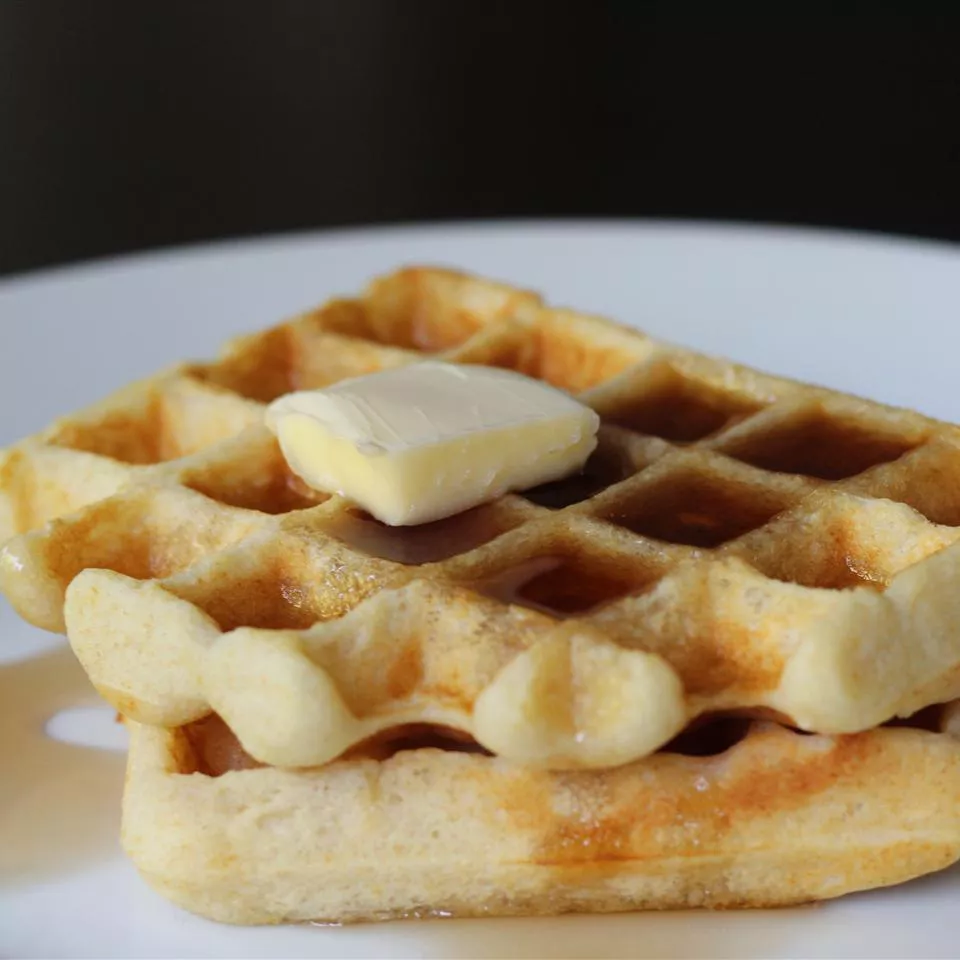

Making waffles is not hard - just try!

Description
Waffles - what's there to say? They taste so good and you can add all of your favorite toppings. So let's make them!
Ingredients
- eggs
- flour
- milk
- oil
- sugar
- baking powder
- salt
- vanilla
- your favorite waffle toppings (eg. maple syrup, fresh berries, chocolate sauce, whipped cream)
Steps
- Whisk two eggs
- Add flour
- Add milk and oil
- Whisk in the sugar
- Stir in the rest of the ingredients
- Pour the mixture onto the preheated waffle iron
- Cook until golden brown
- Add your favorite toppings and enjoy!